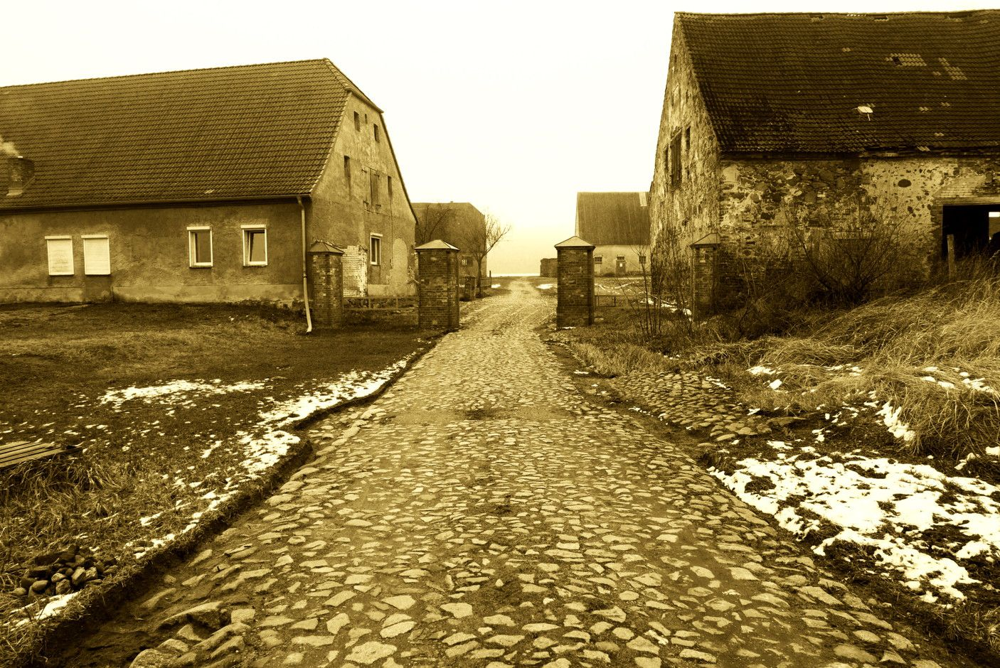
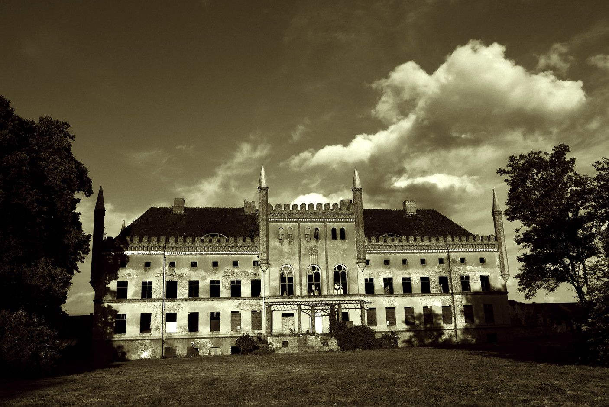

Schlossanlage Broock
Sternfeld
Über Sternfeld zur Schlossanlage Broock Die kleinen Bahnhöfe an der Nordbahn zw. Berlin und Stralsund sind inzwischen fast alle ruinös. Das …
Seite lesen →
Damals
In unserem Extrablatt vor 3 Jahren: „Wunderbar: Unmittelbar vor der Weihnachtsfeier der Alt Telliner Gemeindevertreter am 15.12.2016 traf si…
Seite lesen →
Heute
Das ehrenamtlich betriebene Spenden-“GartenCafé“ vor dem Baubüro der Schlossanlage hat sich inzwischen gut etabliert. Schon zur Eröffnung am…
Seite lesen →
Die Zukunft
Broocker Schlossanlage Das Landesamt für Kultur- und Denkmalpflege MecklenburgVorpommern hat uns die Genehmigung für einen „vorgezogenen för…
Seite lesen →
Verkauf
Hoffnung für Broock? Im August dieses Jahres wurde die Schloss- und Gutsanlage Broock verkauft. – Soweit, so gut?! Diese Mitteilung erhielte…
Seite lesen →
Sternfeld
Über Sternfeld zur Schlossanlage Broock Die kleinen Bahnhöfe an der Nordbahn zw. Berlin und Stralsund sind inzwischen fast alle ruinös. Das …
Seite lesen →Damals
In unserem Extrablatt vor 3 Jahren: „Wunderbar: Unmittelbar vor der Weihnachtsfeier der Alt Telliner Gemeindevertreter am 15.12.2016 traf si…
Seite lesen →Heute
Das ehrenamtlich betriebene Spenden-“GartenCafé“ vor dem Baubüro der Schlossanlage hat sich inzwischen gut etabliert. Schon zur Eröffnung am…
Seite lesen →Die Zukunft
Broocker Schlossanlage Das Landesamt für Kultur- und Denkmalpflege MecklenburgVorpommern hat uns die Genehmigung für einen „vorgezogenen för…
Seite lesen →Verkauf
Hoffnung für Broock? Im August dieses Jahres wurde die Schloss- und Gutsanlage Broock verkauft. – Soweit, so gut?! Diese Mitteilung erhielte…
Seite lesen →
Der Charme der Ökonomie
Das Anlegen von Schlössern und Parks hatte schon immer seinen Preis. Die folgenden Betriebsausgaben waren auch nicht ganz ohne. Das alles finanzierten ihre angestammten Hausherren mit den Erträgen von Landwirtschaft und Beutezügen. Ohne erfolgreichen Militäreinsatz war ein erhabenes Leben im eigenen Paradies vormals selten zu haben. Auch heute kann der Betrieb einer Schlossanlage seine externe Vorgeschichte haben. Aber nicht wenige wundervolle Anlagen müssen inzwischen ihr Überleben selbst erwirtschaften. Und so wird auch in Broock die Auferstehung aus Ruinen vom Charme der Ökonomie begleitet werden. Ziel dieser Entwicklung ist es erklärtermaßen, „Schloss Broock eine seiner Bedeutung angemessenen Nutzung zuzuführen, um es damit wieder im regionalen und überregionalen Bewußtsein zu verankern und den langfristigen Erhalt der Anlage zu sichern. Es ist geplant Broock zu einem nachhaltigen Zentrum für Veranstaltungen, Events, und Festivals unterschiedlicher Größenordnung auszubauen und somit einen Motor für den regionalen Tourismus zu etablieren, von dem nicht nur die Gemeinde Alt Tellin, sondern alle angrenzenden Gemeinden profitieren können. Regionale Firmen werden am Aufbau beteiligt, feste Arbeitsplätze entstehen. Broock soll ein fester Bestandteil des kulturellen Lebens in der Region und ein zentraler Anlaufpunkt für die Bewohner der Umgebung werden... Ein Kultur- und Veranstaltungsort dieser Größenordnung braucht überregionales Publikum. Broock liegt zentral zwischen Berlin, den Städten und touristischen Orten der Ostseeküste... Für die von weiter her angreisenden Besucher werden Übernachtungsmöglichkeiten geschaffen... In fußläufiger Entfernung befindet sich der bereits etablierte Festivalstandort „Kulturgut Freiland e.V.“, mit dem eine enge Kooperation angestrebt wird, bis hin zu Veranstaltungen, die beide Orte nutzen... Die geplante Infrastruktur und die Veranstaltungsräume verschiedener Kategorien erlauben ein differenziertes Kultur- und Veranstaltungsangebot, witterungsunabhängig, in allen Jahreszeiten... Mehrtägige Veranstaltungen können für die Umgebung weitgehend störungsfrei durchgeführt werden, indem geräuschvolle Aktivitäten nachts in den Innenbereichen der Gebäude stattfinden und damit abgeschirmt sind... Gesamt bis zu ca. 65 Veranstaltungen / Jahr Den Besuchern soll ermöglicht werden, bequem und ohne eigenen PKW per Bahn anzureisen. Der ca. 7 km entfernte Bahnhof Sternfeld... ist stündlich mit dem Regionalzug Berlin-Stralsund angebunden. Die Anreise von Berlin HBF dauert 2 Stunden und 15 Minuten... Durch den jahrelangen Leerstand ist im Inneren des Schlossgebäudes die Bausubstanz weitgehend verlorengegangen. Deshalb wird ein Konzept realisiert, das nicht das 19. Jahrhundert wieder entstehen läßt, sondern moderne Räume mit Reminizenzen...“ Zitate: Nutzungskonzept SCHLOSS BROOCK GmbH & Co. KGTollensetaler Stimme 2017-12, Seite 11
